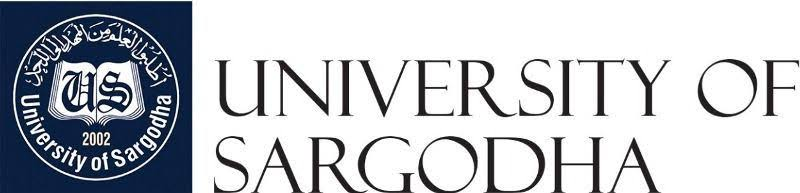
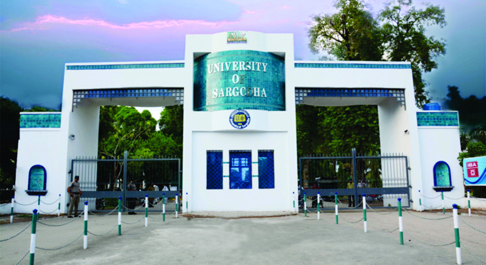
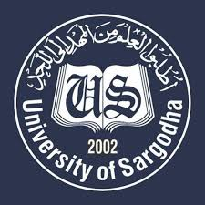

|  | About Us | Admissions | Affiliations & Registration | Academics | Examinations |
|  |
Welcome to University of SargodhaWE are proud to introduce the University of Sargodha, which started its journey in 1929 with the establishment of De’Montmorency College, later renamed in 1946 as Government College Sargodha, which was awarded the University Charter in 2002. Since then, the University has emerged as one of Pakistan's leading seats of advanced studies and research.With its main campus located in Sargodha city and one sub-campuse at Bhakkar, Sargodha University currently has over 26,000 students and 800 faculty members, including 300 PhDs, in 24 departments, two institutes and one school, five constituent colleges that come under the seven faculties of social sciences, arts and humanities, natural sciences, agriculture, pharmacy, medical and health sciences, engineering and technology. They are assisted by around 1,400 administrative staff. The university also has 260 affiliated government and private colleges spread across the province of Punjab. Sargodha University offers modern teaching, research and lodging facilities to its students and scholars, including well equipped classrooms and research labs, rich library resources with online access to books and journals. With an affordable fee structure, it provides a host of scholarships, internships and business opportunities to deserving and competitive students. While the Career Development Centre prepares the students for competitive future careers, the E-Rozgaar centres located at main and sub-campuses enables them to earn online through freelance entrepreneurship. The campus life remains abuzz with scholarly events during each semester, including international and national conferences as well as workshops and seminars by prominent scholars and dignitaries. With a secure and serene environment for sports and co-curricular activities, the students have ample avenues to harness their untapped talents and youthful energies in lively social events such as musical concerts, debating competitions and sports galas organised by the Co-Curricular Forum and Directorate of Sports. A National Literary Festival is held each spring as key avenue for critical scholarship. The University also runs an FM radio station, offering infotainment and education to its youth and people of the region. To ensure quality education and productive research, the University has established vibrant institutions, including the Office of Research, Innovation and Commercialization and Quality Enhancement Cell. As for knowledge transfer, it has achieved a national distinction for synergizing academia with industry by innovating agrarian products through research projects funded locally and internationally. In terms of community services, the university runs a Citrus Nursery along with consultancy services for local citrus growers and exporters, produces its own mineral water, KhusAab, and offers medical, pharmacy and diagnostic facilities to the local community. As the first Pakistani university to join China’s One Belt One Road Agriculture League, Sargodha University has close linkages to three major Chinese agriculture universities, including Lanzhou University and South China Agriculture University, apart from collaborations with the UN Food and Agriculture Organization, Worldwide Fund for Nature and a host of other eminent international and national universities and research institutions. Academic linkages with China, including in social sciences and languages, are overseen by the Pakistan Institute of China Studies, which is trying to bridge the civilization gap between the two nations as they intensify strategic relationship under the China-Pakistan Economic Corridor. The University of Sargodha is currently undergoing major institutional reforms to further promote a culture of enquiry among students and faculty, introduce modern modes of teaching and research, foster academic-industrial linkages as well as national and international collaborations. Quality, productivity, efficiency, transparency and accountability are the core principles of its academic and management affairs. The university strategically aims to become a regional hub of advanced studies and research in Pakistan. |
||||
|  | Copyright @ 2019 University of Sargodha Developed By Muhammad Talha |
University Road|Sargodha Punjab,Pakistan 40100 Contact-us Facebook Twitter |
|||